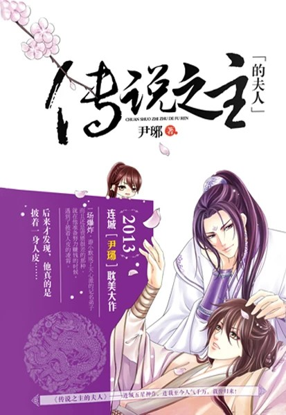

Después de una repentina y desafortunada explosión, You Xiaomo despierta en un cuerpo y un mundo que no son los suyos. Con su nombre siendo lo único que le queda familiar, tiene que adaptarse rápidamente, una tarea tan increíble como terrible ¡Se ha apoderado del cuerpo de un discípulo en prueba de la Secta Tianxin y solo tiene seis meses para demostrar su valía como alquimista, o será expulsado!
Decidido a ganarse la vida en este nuevo mundo, You Xiaomo pone toda su alma en convertirse en alquimista y encontrar formas de ganar dinero. Mientras lo hace, se topa con Ling Xiao, el practicante número uno y el supuesto sucesor de la secta Tianxin. Aunque esto parece ser un golpe de buena suerte, You Xiaomo pronto descubre, para su horror, que Ling Xiao no es quien dice ser.